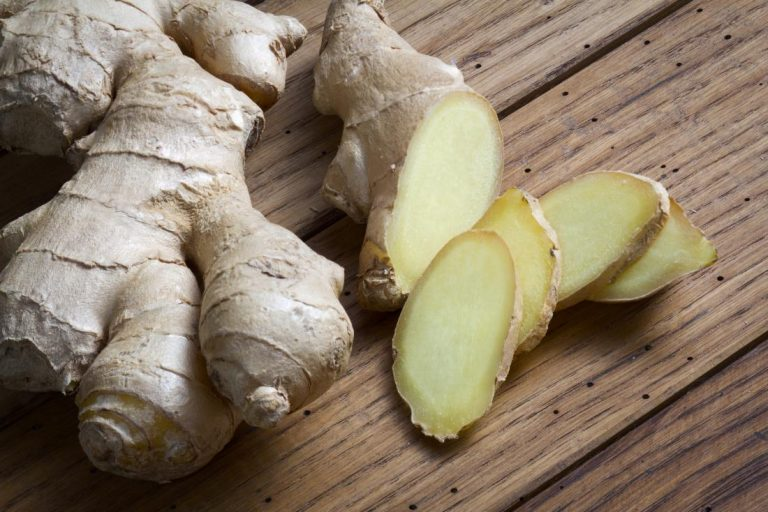

How To Improve Our Immunity to Combat COVID-19 Pandemic
During the COVID-19 pandemic, in addition to frequent hand washing and wearing masks out in public, boosting our immune system is equally important in order to combat the coronavirus. According to the public record, some people show mild symptoms after contracting coronavirus, while others developed severe reactions or major health complications. The coronavirus causes our immune system to overreact to the virus when our body fights against it. This mechanism hurts our own body cells as well. What helpful tips can enhance our immunity and benefit our bodies when an inflammatory response is activated?
Lower Your Stress Levels
We all have stress from different aspects of our life, such as financial liabilities, family responsibilities, jobs, relationships, etc. Chronic stress can depress our immune system and hinder its functionality in fighting against viruses. Sleep deprivation can also be associated with stress. Finding a healthy way to release our stress is essential in order to improve our immunity. Exercising, meditating, yoga, taichi, etc, have been researched and proven to positively impact our mood and mind. Set up a schedule to practice these stress-relieving strategies regularly. Find the best sleeping pattern to receive an adequate amount of sleep and rest, aiming for at least 7-8 hours of sleep a day.
Choose a Nutrition Balanced Diet
The common idiom can be applied here: you are what you eat. Food plays a big part in our overall health. We need to provide important nutrients to make our immune system function effectively and efficiently, especially when our immune system is activated, to kill the virus while not harming our own cells. What is considered as a nutrition-balanced diet? We get our nutrients from five food groups: grains, meats, vegetables, fruits, and dairy products. The Dietary Guidelines for Americans recommends adopting a healthy eating pattern as a part of one’s lifestyle. Include a variety of nutrient-dense foods within our calorie limits. Consume foods that are low in added sugars, fats, or sodium. Based on 2000 calories a day, it is recommended to take 45-65% calories from carbohydrates, 10-20% calories from protein, and 25-35% from fats. Ideally, we should fill most of our plate with vegetables and grains, with only moderate amounts of protein. However, if we want to enhance our immunity to protect against coronavirus infection, it is important to consume adequate amounts of protein, vegetables and fruits. We need enough protein to produce enough antibodies and antioxidants to get rid of the free radicals produced by oxidative stress during inflammatory response.
Protein
To allow our immune cells to run efficiently, we also need to have enough protein reserves for immune cell production, such as antibody synthesis, white blood cells, etc. Traditionally, we use chicken broth as a Home remedy for curing a cold or flu. Researchers became interested in the science behind it and studied it to find out if it had any healing properties. Many studies have shown that chicken broth may have some anti-inflammatory effects and help thin mucus. A substance called carnosine from chicken breast used in chicken broth may help inhibit the proinflammatory conditions associated with flu or cold viral infection. Good sources of carnosine can include meat, fish, poultry, eggs, etc.
Antioxidants
Certain vitamins and minerals may relieve the oxidative stress as a result of immune responses toward coronavirus infection. They include vitamin C, D, E, and zinc. Vitamin C and zinc supplements have been researched to show that these nutrients are positively linked to shorter duration of cold or flu symptoms and reduced severity of the symptoms. Vitamin D helps promote immune function by enhancing the pathogen-fighting effects of white blood cells, which are important immune cell soldiers that fight the virus for us. Getting adequate sunlight exposure can help synthesize vitamin D in our body. Vitamin E is also an antioxidant that protects the integrity of cell membranes. It prevents the cell membranes from oxidative damage during inflammatory response. If we don’t take enough foods containing the above nutrients (usually need larger doses during the infection process), we can take supplements to replenish the diminished nutrient storage. (Talk to your doctor before any supplementation).
Fluids and Electrolytes
I cannot stress enough how we need to drink a lot of fluids to replace the fluid lost when experiencing flu or cold symptoms. In addition to fluid consumption, electrolytes also need to be replenished if one or more of the following symptoms exist, such as nausea, vomiting, diarrhea, fever, nasal congestion, etc. Dehydration can make our viral infection symptoms worse or prolong our recovery time. Good choices for fluid replacement can include Pedialytes (for children), Gatorade (Zero Gatorade for those who have diabetes), juices, chicken broth, lemon tea, ginger ale, ginger tea, etc. Caffeinated beverages and alcohol are not recommended. Avoid milk if you get diarrhea.
Garlic
Garlic can boost immune function. Garlic contains alliin, which can turn into allicin and other sulfur-containing compounds when crushed and given time to react with oxygen. Allicin and other sulfur-containing compounds have immune-boosting properties which enhance the disease-fighting responses of certain types of white blood cells. I have been using garlic for 3-4 years to confront flu-causing or cold-causing viruses. It works out for my family and me. People who have GERD or stomach problems should use it with caution as garlic will cause some stomach irritation or discomfort. When my throat feels slightly off, I immediately slice and crush a clove of garlic. I’ll leave it in the air for 10-15 minutes for it to react with the air. Then I mix it well with water and drink the whole mixture. Don’t swallow it immediately, let the smell filter through the mouth, throat, nose for the rest of the night (maybe brush your teeth before the remedy treatment). I typically wake up without any cold symptoms in the morning. A critical tip with this remedy is that you have to use it in time before the symptoms get any worse than throat discomfort. If the cold symptoms like fever, diarrhea, runny nose, etc. have already developed, the preventative benefit of using garlic diminishes.
Ginger

Ginger has been researched to not only have anti-inflammatory and antioxidative properties, but also some anti-cancer effects. These health benefits may be caused by its functional phytochemicals including gingerols, shogaol, and paradols. Ginger can also help with relieving nausea and vomiting symptoms, which might occur during a coronavirus infection. I usually recommend ginger ale and crackers to my clients who have an upset stomach. For the best results, I would recommend using ginger tea as a beverage.
Onions
Onions are a good source of selenium, sulfur compounds, zinc, vitamin C, and quercetin (flavonoid). Onions have a lot of nutrients that a healthy immune system needs. Selenium helps with initiating the body’s immune response when encountering virus infections. Quercetin is a flavonoid that serves as an antioxidant, which may help relieve oxidative stress during inflammatory response. Try to include onions in meal planning.
Ginseng
Ginseng has been broadly used in Chinese medicine to enhance overall body functions for many centuries. Ginseng has been studied to have many health-beneficial properties, including maintaining Homeostasis of the immune system. Different types of immune cells can be influenced by ginseng treatment. Its antiviral and antibacterial properties have been used to clear the body from viral or bacterial infections. Ginseng can be consumed as ginseng tea, honey ginseng tea, etc. You could possibly add ginseng as an additional ingredient to the chicken broth to even double the benefits.
Stay Safe and Healthy
As this pandemic has affected millions of people in the world, it is time to evaluate our health conditions and adjust our diet plans as necessary in order to build a strong immune system. Together we will overcome the coronavirus pandemic!